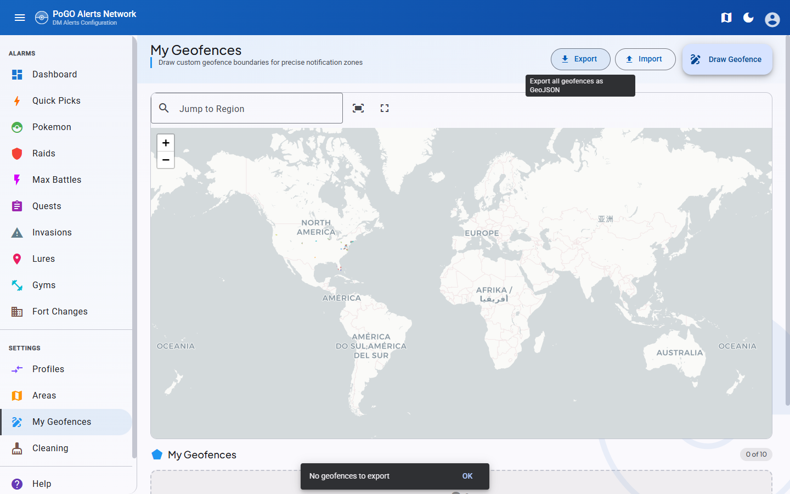
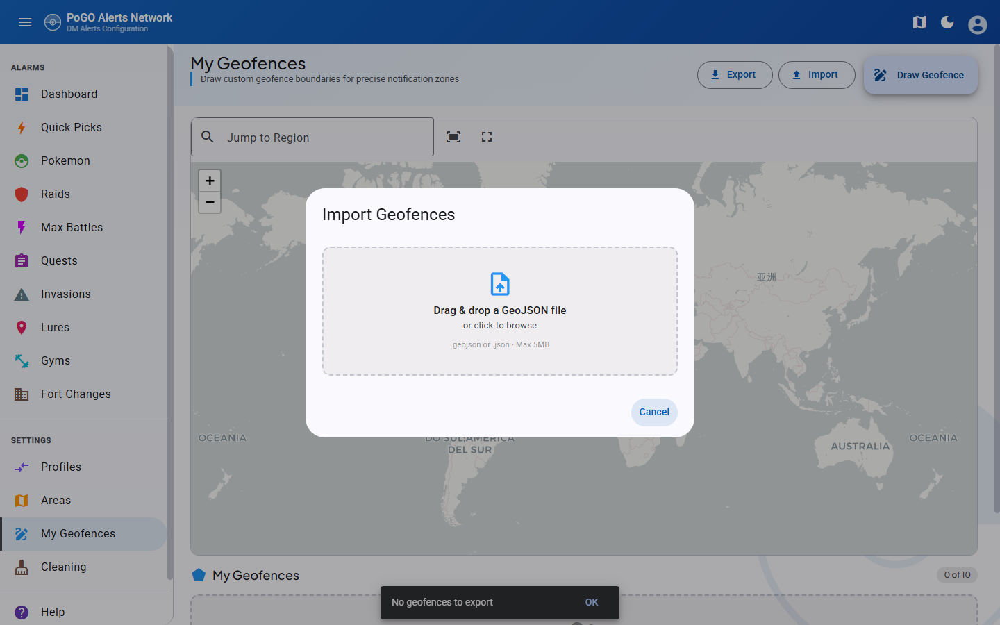

Custom Geofences¶
Users can draw custom polygon geofences on the "My Geofences" page for precise notification zones (e.g., park boundaries) instead of distance-from-center circles.
How it works¶
PoracleWeb.NET acts as the single geofence source for PoracleJS. Instead of PoracleJS connecting to Koji directly, PoracleWeb.NET fetches admin geofences from Koji, resolves group names from the Koji parent chain, merges them with user-drawn geofences from its own database, and serves everything via one endpoint. No custom code is needed in PoracleJS or Koji — standard upstream versions work.
- User draws a polygon on the map, saved to the PoracleWeb.NET database
- PoracleWeb.NET serves a unified geofence feed via
GET /api/geofence-feed— admin geofences from Koji (cached 5 minutes) plus user geofences from the local DB - PoracleJS loads all geofences from a single PoracleWeb.NET URL (no direct Koji connection needed)
- User geofences have
displayInMatches: false— names are hidden from all DMs for privacy - Admin geofences have
displayInMatches: trueandgrouppopulated from Koji parent hierarchy - Users can submit geofences for admin review, which creates a Discord forum post with a static map
- Admins approve, and the geofence is promoted to Koji as a public area visible to all users
- If Koji is unreachable, user geofences are still served (graceful degradation)
- If PoracleWeb.NET itself is down, PoracleJS falls back to its built-in
.cache/directory
Component diagram¶
graph LR
KojiServer[(Koji Server
Public areas)] -->|admin geofences
cached 5 min| PoracleWeb
subgraph PoracleWeb
Feed[GeofenceFeedController
GET /api/geofence-feed
Unified proxy]
DB[(poracle_web DB
user geofences)]
end
PoracleWeb -->|single URL
admin + user geofences| Poracle[PoracleJS
geofence.path]
Poracle -.->|failover| Cache[PoracleJS .cache/]
Detailed internal flow¶
graph TB
subgraph PoracleWeb
UI1[My Geofences Page
Draw / Name / Submit]
UI2[Geofence Mgmt
Approve / Reject / Delete]
Feed[GeofenceFeedController
GET /api/geofence-feed
Unified proxy]
Svc[UserGeofenceService
Create / Delete / Submit / Approve]
Koji[KojiService
Fetch admin geofences + approve]
Discord[DiscordNotificationService
Forum posts + maps]
end
DB[(poracle_web DB
user_geofences)]
KojiServer[(Koji Server
Public areas)]
DiscordForum[(Discord Forum
Threads + Tags)]
Poracle[PoracleJS
Single URL to PoracleWeb]
UI1 --> Svc
UI2 --> Svc
Svc --> DB
Svc --> Koji
Svc --> Discord
Feed --> DB
Feed --> Koji
Koji --> KojiServer
Discord --> DiscordForum
Feed -.->|admin + user geofences| Poracle
Geofence lifecycle¶
stateDiagram-v2
[*] --> Create : User draws polygon
Create --> Active : Save to DB + add to area + reload Poracle
Active --> Active : Alerts work via feed endpoint
Active --> Submitted : User clicks Submit for Review
Submitted --> PendingReview : Discord forum post created with map
PendingReview --> PendingReview : Still works privately
PendingReview --> Approved : Admin approves
PendingReview --> Rejected : Admin rejects
Approved --> [*] : Push to Koji as public area\nLock Discord thread
Rejected --> Active : Stays private with review notes\nLock Discord thread
note right of Active : Private — only owner\ngets alerts.\nName hidden from\nall DMs.
note right of Approved : Public — all users\ncan select it on\nthe Areas page.
Admin geofence management¶
Admins can view and manage all user-created geofences from the User Geofences page in the Admin sidebar (/admin/geofence-submissions).
View modes¶
The page supports three view modes, toggled via the toolbar:
- Card view (default) — Map thumbnail cards grouped by region in collapsible expansion panels. Each card shows the geofence polygon, owner with avatar, status chip, metadata, and action buttons. Map thumbnails are lazy-loaded via
IntersectionObserverand preserved across view switches. - List view — Compact table grouped by region in collapsible expansion panels. Columns: Name, Status, Owner (with avatar), Region, Points, Created, Actions.
- Table view — Flat ungrouped table showing all geofences with sortable columns. Columns: Name, Status, Owner, Region, Points, Created, Submitted, Reviewed By, Actions. Click column headers to sort ascending/descending.
Features¶
- Region grouping — Card and list views group geofences by their
groupName(region). Each group has a collapsiblemat-expansion-panelwith the region name and a geofence count badge. Regions are sorted alphabetically, with "No Region" last. - Sortable columns — Table view supports sorting by name, status, owner, region, points, created, and submitted date. Click a column header to sort; click again to reverse direction. Sorting also applies to the card and list views.
- Owner display names and avatars — Resolves Discord/Telegram usernames from the Poracle
humanstable instead of showing raw user IDs. Circular avatars (24px) are displayed next to owner names. Fallback: generic person icon when no avatar is available. - Reviewer display names and avatars — The
reviewedByfield is resolved to the reviewer's Discord username and avatar via the same batch human lookup. Reviewer avatars (16px) appear in card metadata and the table's Reviewed By column. - Map thumbnails — Each geofence card shows a non-interactive Leaflet map preview with the polygon rendered in its status color. Thumbnails are lazy-loaded via
IntersectionObserverfor performance. - Detail dialog — Click a card's map thumbnail or View button to open an interactive Leaflet map dialog with:
- Full summary panel (name, owner, group, status, point count, area in km²/m², dates, review notes)
- Interactive pan/zoom map with the polygon auto-fitted to bounds
- Reference geofences from Poracle areas shown as dashed colored outlines (same palette as the Areas page) with name tooltips on hover
- Point count and area — Each geofence shows its vertex count and computed area (m² for areas under 1 km², km² otherwise) using the spherical excess formula
- Status filtering — Filter tabs for All, Pending, Active, Approved, and Rejected with counts. Filters apply across all view modes.
- Skeleton loading — Animated skeleton cards with map placeholders during data fetch
Owner and reviewer resolution¶
Owner and reviewer names are resolved via a single batch lookup against the Poracle humans table. Distinct owner IDs and reviewer IDs are merged and fetched in one pass for efficiency. Avatars are served from AvatarCacheService with Discord CDN default fallback. The UserGeofence model exposes ownerName, ownerAvatarUrl, reviewedByName, and reviewedByAvatarUrl as enriched (non-mapped) properties set by UserGeofenceService.GetAllWithDetailsAsync() and AdminGeofenceController.GetAll.
Geofence statuses¶
| Status | Description |
|---|---|
active |
Private, user-only. Alerts work via the feed endpoint. |
pending_review |
Submitted for admin review. Discord forum post created. Still works privately. |
approved |
Promoted to Koji as a public area. Visible to all users. |
rejected |
Remains private with review notes. User can continue using it. |
Limits¶
- Maximum 10 custom geofences per user
- Polygons limited to 500 points
Naming rules¶
- Geofence names (
kojiNamefield) are always lowercase because Poracle does case-sensitive area matching - Names are auto-generated from the user-provided display name (lowercased)
- Collisions are resolved by appending a numeric suffix
GeoJSON Import & Export¶
Custom geofences can be exported and imported using the standard GeoJSON format, making it easy to work with external GIS tools or migrate geofences between systems.
Export¶
- Click the download/export button on the My Geofences page
- Select which geofences to include in the export
- The file is exported as a standard GeoJSON
FeatureCollection - Each geofence becomes a
FeaturewithPolygongeometry - Feature properties include
name,region, andstatus

The exported file is compatible with any GIS tool that supports GeoJSON, including geojson.io, QGIS, Google Earth, and others.
Import¶
- Click the upload/import button on the My Geofences page
- Paste GeoJSON text directly or upload a
.geojsonfile - Each
Polygonin theFeatureCollectioncreates a new geofence - Review and rename each geofence before saving
- Region auto-detection applies to imported polygons (same as hand-drawn geofences)
- Names are auto-generated from Feature
properties(e.g.,nameortitle) or fall back to the polygon index - Imported geofences count toward the 10-geofence-per-user limit

Use cases
- Migrating from other systems — Export geofences from another Pokemon GO tool or mapping platform and import them into PoracleWeb.NET
- Drawing in desktop GIS tools — Use QGIS or geojson.io for precise polygon editing, then import the result
- Sharing boundaries between users — One user exports their geofences and another imports them
Caching¶
- Admin geofences from Koji are cached in memory for 5 minutes (
IMemoryCache) - Cache is invalidated when a geofence is approved/promoted to Koji
- User geofences are served directly from the database (no caching)
Failover¶
| Failure | Behavior |
|---|---|
| Koji unreachable | Feed endpoint logs the error, still serves user geofences from DB |
| PoracleWeb.NET down | PoracleJS falls back to its built-in .cache/ directory |
Setup¶
1. Create the PoracleWeb.NET database¶
A separate MySQL/MariaDB database for app-owned data:
The user_geofences table is created automatically on first run.
2. Configure the Koji connection¶
Set the following in your environment or appsettings.json:
Koji:ApiAddress— Koji server URL (e.g.,http://localhost:8080)Koji:BearerToken— Koji API bearer tokenKoji:ProjectId— Koji project ID for promoted geofencesKoji:ProjectName— Koji project name, used to fetch from/geofence/poracle/{name}
3. Point PoracleJS to PoracleWeb.NET¶
Set geofence.path in PoracleJS config to a single PoracleWeb.NET URL:
Remove kojiOptions.bearerToken from the PoracleJS geofence config if present (it is harmless if left, but no longer needed).
4. Remove group_map.json¶
Remove group_map.json from PoracleJS if it exists — group names are now resolved automatically from the Koji parent chain by PoracleWeb.
5. Restart PoracleJS¶
6. Discord forum channel (optional)¶
For geofence submission discussions:
- Set
Discord:GeofenceForumChannelIdto your forum channel ID - Give the bot View Channel, Send Messages in Threads, and Manage Threads permissions
- Forum tags (Pending/Approved/Rejected) are auto-created if the bot has Manage Channels permission, or create them manually
PoracleJS failover
PoracleJS's built-in .cache/ directory automatically caches geofence data. If PoracleWeb.NET is temporarily unavailable, PoracleJS falls back to its last cached copy.